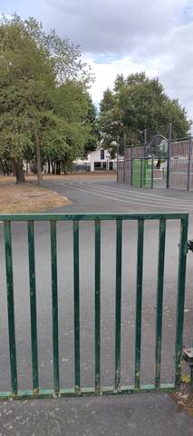

{kind=link}
Piste très difficile d'accès : je ne suis même pas sûr qu'on puisse y entrer publiquement. Il aurait fallu que j'enjambe une barrière de plus d'un mètre, et j'ai l'impression que l'installation est rattachée à l'une des écoles des alentours. Je m'attendais à un complexe sportif, mais non, pas vraiment. Je n'y ai vu aucun agrès, juste un tracé de forme quasi rectangulaire — clairement pas adapté à un usage en athlétisme. C'est plutôt une aire de jeux ou de sport en général. Pas exploitable pour un athlète : à La Chevrolière, le stade municipal et son 400 m en cendrée sont à sept cents mètres, en accès libre, et n'ont rien de commun avec ça.
Piste de La Chevrolière
Rue de Villegaie, 44118 La Chevrolière · Loire-Atlantique
Piste de La Chevrolière est un équipement d'athlétisme situé à La Chevrolière (Loire-Atlantique), en Pays de la Loire. Il dispose d'une piste en bitume / goudron, à 3 couloirs.
Photos

Il manque sûrement une photo
Les sautoirs et les aires de lancer sont ce que la donnée publique décrit le plus mal, et ce qu'on photographie le moins. Un gros plan du sol, une perche bâchée, un bac de sable envahi : chacun ajoute ce qu'aucun champ ne porte.
Envoyer une photoSans compte GitHubPiste
- Revêtement
- Bitume / goudron
- Développement
- 105 m — estimé d'après OpenStreetMap, non mesuré sur place
- Couloirs
- 3
- Configuration
- Plein air
Visite du 25 août 2026 : l'entrée est fermée par une barrière métallique verte de plus d'un mètre, close mais sans cadenas visible. Il aurait fallu l'enjamber, ce qui n'a pas été fait : l'accès n'est donc pas décrit comme libre, et il n'est pas décrit comme interdit non plus — personne n'a essayé d'ouvrir, et aucun panneau d'horaires, de règlement ou d'interdiction n'était affiché à l'entrée. La question de savoir si l'on peut y entrer légitimement reste ouverte, et c'est la première chose à vérifier lors d'une prochaine visite.
Avis des athlètes
Visite sur place le 25 août 2026, depuis l'extérieur de l'enceinte. Cette fiche remplace ce qui n'était jusqu'ici qu'une lecture d'orthophoto. Ce n'est pas une piste d'athlétisme. Le tracé est un rectangle aux angles arrondis, pas un anneau à deux virages : on ne peut pas y courir en vitesse, les changements de direction sont trop brusques. Trois couloirs sont marqués en blanc sur un enrobé sombre. Le revêtement a été identifié depuis le bord, à quelques mètres, et non foulé — l'observateur n'a pas pu entrer ; c'est du bitume selon toute vraisemblance à cette distance, mais la mention vaut ce que vaut un constat par-dessus une barrière. Aucun agrès n'a été vu : ni sautoir en longueur, en hauteur ou à la perche, ni aire de lancer, ni rivière de steeple. Le champ « agrès » reste donc vide. Ce qui est visible à l'intérieur de l'enceinte relève du jeu et du sport scolaire : un module de jeux pour enfants avec toboggan et structure à grimper, et un bâtiment clair de type modulaire. L'ensemble ressemble à une aire de jeux et de sport général, pas à un complexe sportif. L'installation paraît rattachée à l'une des écoles voisines, mais aucun panneau ni nom d'établissement n'a été lu sur place : c'est une impression, elle n'est pas traduite dans le champ « scolaire », qui reste vide. Le développement n'a pas été mesuré. Le chiffre d'environ 105 m vient du périmètre du tracé OpenStreetMap (relation/15034385, tracé le 2022-12-22) et reste un développement probable. Une mesure au décamètre en couloir 1, à 30 cm de la corde, l'effacera le jour où elle sera faite — encore faudra-t-il pouvoir entrer. Site absent du recensement du ministère. À ne pas confondre avec les deux autres pistes de la commune, à environ 700 m d'ici : le Stade Municipal (I440410001), grand anneau en cendrée d'environ 400 m en accès libre, et le Complexe Sportif Hugues Martin (I440410002), petit anneau en bitume autour du city-stade. Pour qui cherche à s'entraîner à La Chevrolière, c'est vers ces deux-là qu'il faut aller.
Autres sites du département
- Stade Municipal
- Complexe Sportif Hugues Martin
- Stade Muriel Hurtis — Complexe des Chevrets
- Complexe sportif des Grenais
- Stade Patrick Perrais
- Complexe Sportif de la Croix Jeannette
Signaler une erreur ou compléter la fiche
Réf. c-piste-la-chevroliere · Source : Contribution communautaire — Data ES, ministère chargé des Sports, Licence Ouverte 2.0. Les données sont déclaratives et peuvent être incomplètes : vérifiez les conditions d'accès avant de vous déplacer.